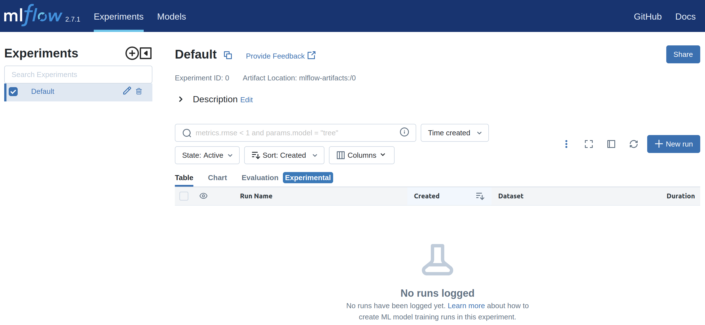
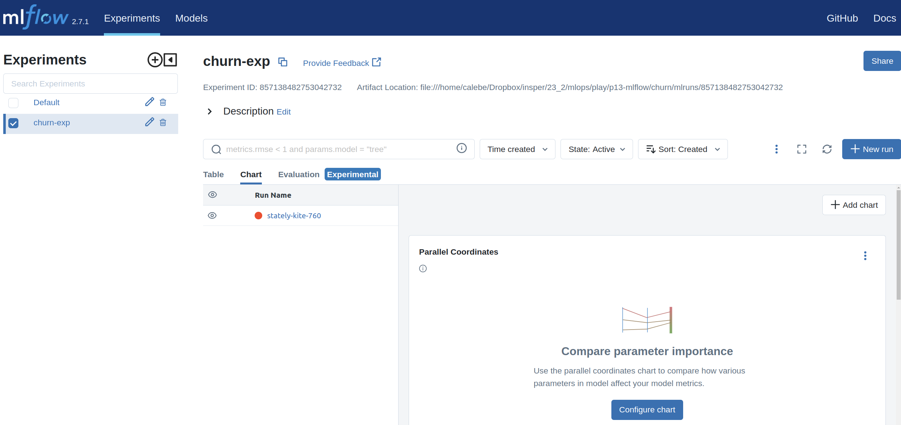

Practicing
Installing MLflow
To install MLflow, run:
Tip! 1
Remember to activate the course environment (conda or venv) or create one for this class!
Base Code
Before including MLflow resources in our project, let's consider the following structure, containing the necessary files to work with:
Question 1
Click to see train.py source code!
"""
This module contains functions to preprocess and train the model
for bank consumer churn prediction.
"""
import pandas as pd
import matplotlib.pyplot as plt
from sklearn.utils import resample
from sklearn.model_selection import train_test_split
from sklearn.linear_model import LogisticRegression
from sklearn.compose import make_column_transformer
from sklearn.preprocessing import OneHotEncoder
from sklearn.metrics import (
accuracy_score,
precision_score,
recall_score,
f1_score,
confusion_matrix,
ConfusionMatrixDisplay,
)
def rebalance(data):
"""
Resample data to keep balance between target classes.
The function uses the resample function to downsample the majority class to match the minority class.
Args:
data (pd.DataFrame): DataFrame
Returns:
pd.DataFrame): balanced DataFrame
"""
churn_0 = data[data["Exited"] == 0]
churn_1 = data[data["Exited"] == 1]
if len(churn_0) > len(churn_1):
churn_maj = churn_0
churn_min = churn_1
else:
churn_maj = churn_1
churn_min = churn_0
churn_maj_downsample = resample(
churn_maj, n_samples=len(churn_min), replace=False, random_state=1234
)
return pd.concat([churn_maj_downsample, churn_min])
def preprocess(df):
"""
Preprocess and split data into training and test sets.
Args:
df (pd.DataFrame): DataFrame with features and target variables
Returns:
ColumnTransformer: ColumnTransformer with scalers and encoders
pd.DataFrame: training set with transformed features
pd.DataFrame: test set with transformed features
pd.Series: training set target
pd.Series: test set target
"""
filter_feat = [
"CreditScore",
"Geography",
"Gender",
"Age",
"Tenure",
"Balance",
"NumOfProducts",
"HasCrCard",
"IsActiveMember",
"EstimatedSalary",
"Exited",
]
cat_cols = ["Geography", "Gender"]
num_cols = [
"CreditScore",
"Age",
"Tenure",
"Balance",
"NumOfProducts",
"HasCrCard",
"IsActiveMember",
"EstimatedSalary",
]
data = df.loc[:, filter_feat]
data_bal = rebalance(data=data)
X = data_bal.drop("Exited", axis=1)
y = data_bal["Exited"]
X_train, X_test, y_train, y_test = train_test_split(
X, y, test_size=0.3, random_state=1912
)
col_transf = make_column_transformer(
(OneHotEncoder(handle_unknown="ignore", drop="first"), cat_cols),
remainder="passthrough",
)
X_train = col_transf.fit_transform(X_train)
X_train = pd.DataFrame(X_train, columns=col_transf.get_feature_names_out())
X_test = col_transf.transform(X_test)
X_test = pd.DataFrame(X_test, columns=col_transf.get_feature_names_out())
return col_transf, X_train, X_test, y_train, y_test
def train(X_train, y_train):
"""
Train a logistic regression model.
Args:
X_train (pd.DataFrame): DataFrame with features
y_train (pd.Series): Series with target
Returns:
LogisticRegression: trained logistic regression model
"""
log_reg = LogisticRegression(max_iter=1000)
log_reg.fit(X_train, y_train)
return log_reg
def main():
df = pd.read_csv("data/Churn_Modelling.csv")
col_transf, X_train, X_test, y_train, y_test = preprocess(df)
model = train(X_train, y_train)
y_pred = model.predict(X_test)
print(f"Accuracy score: {accuracy_score(y_test, y_pred):.2f}")
print(f"Precision score: {precision_score(y_test, y_pred):.2f}")
print(f"Recall score: {recall_score(y_test, y_pred):.2f}")
print(f"F1 score: {f1_score(y_test, y_pred):.2f}")
conf_mat = confusion_matrix(y_test, y_pred, labels=model.classes_)
conf_mat_disp = ConfusionMatrixDisplay(
confusion_matrix=conf_mat, display_labels=model.classes_
)
conf_mat_disp.plot()
plt.show()
if __name__ == "__main__":
main()
Question 2
Question 3
You will notice that nothing is registered, all results from model training code are just displayed on screen.
To be able to make changes to the data or code and compare the results, we will use MLflow to track experiments.
MLflow Logging
To track our ML experiments, let's change the train.py file, as required in the next exercises.
Question 4
Question 5
Question 6
Question 7
Tracking UI
The Tracking UI provides a user-friendly interface to visualize, search, and compare runs in MLflow. It also allows you to download run artifacts and metadata for further analysis in external tools.
A mlruns folder was probably created by MLflow to store the tracking data. The file structure should look like:
├── data
│ └── Churn_Modelling.csv
├── mlruns
│ ├── 0
│ │ └── meta.yaml
│ ├── 981952663556035646
│ │ ├── 15b47ca85fd84bd396b49e640c54d379
│ │ │ ├── artifacts
│ │ │ ├── meta.yaml
│ │ │ ├── metrics
│ │ │ │ ├── accuracy
│ │ │ │ └── precision
│ │ │ ├── params
│ │ │ │ ├── feature_names
│ │ │ │ └── max_iter
│ │ │ └── tags
│ │ │ ├── mlflow.runName
│ │ │ ├── mlflow.source.name
│ │ │ ├── mlflow.source.type
│ │ │ └── mlflow.user
└── src
└── train.py
Then, navigate to the parent directory of mlruns (project root directory) in your terminal and run the command:
Tip! 2
The -p 5005 defines a port for the application. Use another port if it is occupied!
Access the UI
Access the link http://localhost:5005 in the browser. You should see the MLflow graphical interface.
The default interface is:

But since we already ran an experiment, you should see it in the left menu with the name "churn-exp".
When you click on churn-exp, you should see a run of the experiment on the right, with some random name!

Question 8
Practicing
Question 9
Question 10
Question 11
Question 12
Question 13
Question 14
Question 15
Question 16
Question 17
Question 18
Done! This way, with MLflow, we have a way to track our ML experiments!
References
- Data: https://www.kaggle.com/datasets/shantanudhakadd/bank-customer-churn-prediction/data
- Beginning MLOps with MLflow. Chapter 3 and 4.
- Introducing MLOps. Chapter 6.
- Git flow image: https://blog.kinto-technologies.com/assets/blog/authors/r.wen/git-flow-diagram.png
{kind=link}